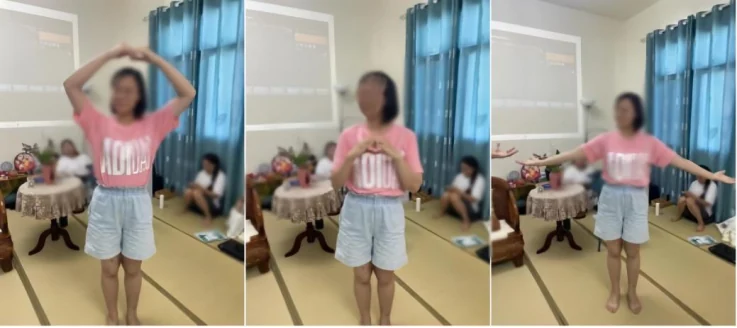
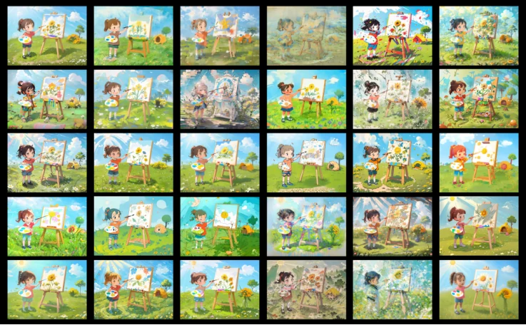
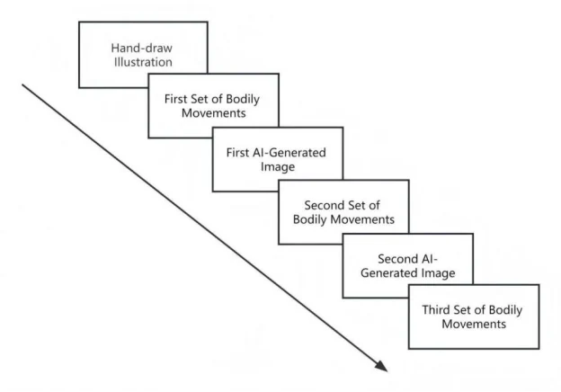

AI-assisted Embodied Painting
Exploring New Approaches to Artistic Healing Through Delving into the Subconscious.
How can AI transform expression without replacing the participant’s own input?
The process begins with a participant-produced drawing, moves into bodily movement, and uses AI-generated imagery as material for the next response. The generated image is never treated as the final product; it sits inside a repeated drawing–movement–generation loop.
Expression moves back and forth between image, body, and generated transformation.
The system is designed so that AI never becomes the sole author. Each generated image returns to the participant as material for the next bodily or visual response.
The value lies in the transformation between steps.
Select each stage to see how visual and bodily expression alternate across the interaction.



The system was evaluated as an intervention, not only as a creative prototype.
Participants completed emotional-response measures before and after the activity. The published study reports significant pre/post improvement.
Embodied loop
Movement remains part of the creative mechanism rather than becoming a secondary presentation layer.
AI as transformation
Generated imagery is used to reinterpret participant-produced material rather than replace it.
Empirical validation
Pre/post evaluation provided evidence of significant emotional improvement.
The interaction loop matters more than the final image.
For this project, AI is useful because it changes participant-produced material in a way that can prompt another bodily and visual response.